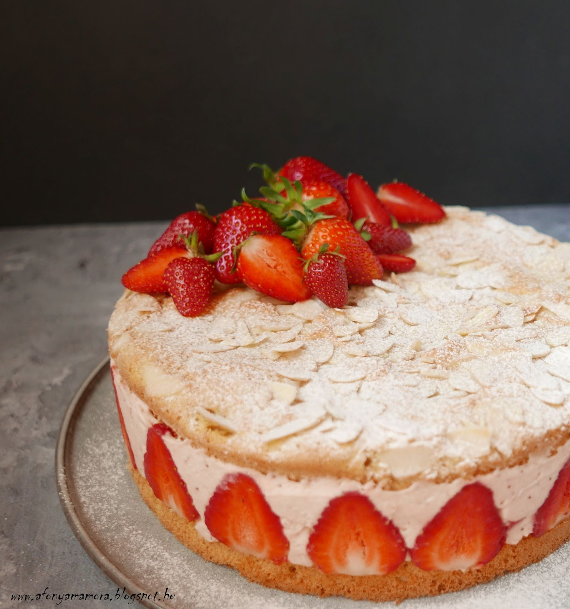
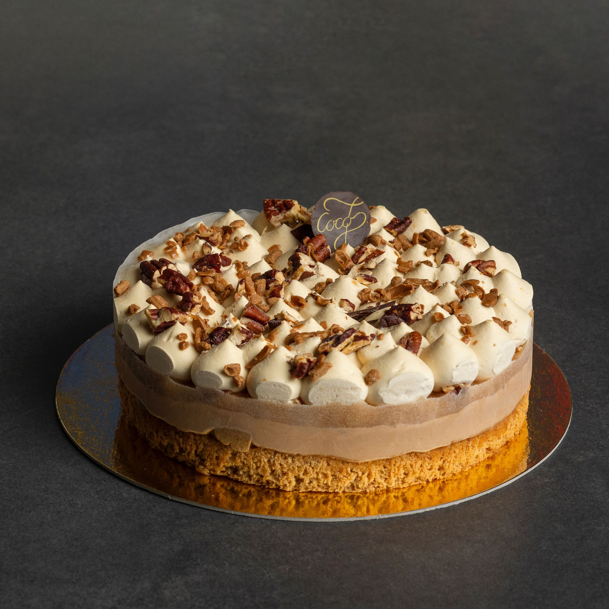

Afgán Máktorta

leírás:
Baracklekvárral megkent piskóta alj, máktöltelék meggy darabokkal, a tetején tejszínes krém, rajta mák szórás.
Hozzáadott cukor nélkül készült, meggyel és édesítőszerekkel.
Használt édesítőszerek: maltit, szukralóz, eritrit Élelmi rostban gazdag.Allergének: 1 – Glutén, 3 – Tojás és származékai, 7 – Tej és származékai
Mignon

leírás:
Piskóta kúpban gesztenyés vajkrémes töltelékkel, a közepén házi
baracklekvárral, külseje rózsaszín fondant-nal áthúzva, zöld
kókuszreszelékkel díszítve.
Kaliforniai Epertorta

leírás:
Piskóta alap, fehér csokoládés és eper mousse rétegekkel, eper darabokkal
és eper zselével, fehér csokoládé forgáccsal díszítve.
Allergének: 1 – Glutén, 3 – Tojás és származékai, 6 – Szója és származékai, 7
– Tej és származékai
Saigoni Alma Karamell

leírás:
Diós-fahéjas piskóta alap, karamell mousse réteggel, alma zselével, fehér
csokoládé mousse-szal és csokoládé dísszel a tetején.
Allergének: 1 – Glutén, 3 – Tojás és származékai, 6 – Szója és származékai, 7
– Tej és származékai, 8 – Diófélék